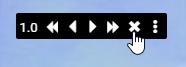
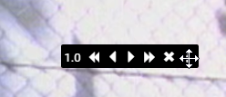
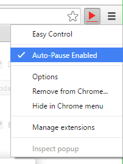

Enhancement Added descriptive change labels to change log. [Issue #54]
New Feature Added site blacklist option to prevent controlling generic media on certain sites. [Issue #49]
Enhancement Added ability to remove media controls. [Issue #56]

Enhancement Made media controls draggable. [Issue #55]

Bug Fix Fixed pause on inactivity option label [Issue #52]
Bug Fix Fixed media controls not appearing on Netflix [Issue #53]
Updated default install/update settings.
Version 1.13.0
New Feature Added option to disable auto-pause on a per-tab basis through browser action context menu. [Issue #37](Right click browser action icon.)
Enhancement Added option to disable showing auto-paused content notification.
New Feature Added notifications to display when content is auto-paused. Notifications include a prompt to disable auto-pause for that content's tab. [Issue #37]
Enhancement Made showing change log on update configurable.
Bug Fix Fixed playback speed control icons not loading correctly on some computers. [Issue #43]
Abstracted content scripts in manifest.json to make adding new controllers/scripts easier.
Bug Fix Fixed issue where keyboard shortcuts were being handled multiple times after opening multiple videos on Youtube. [Issue #51]
Bug Fix Fixed playback controls not working when Netflix was full-screened. [Issue #48]
Version 1.12.0
Enhancement Added button to options page to view change log.
Enhancement Added images to change log. [Issue #42]
Bug Fix Fixed how playback speed controls looked on generic sites. [Issue #45]
Bug Fix Fixed issue with pausing Youtube videos in newly-opened tabs before video had auto-played. [Issue #32]
Version 1.10.0
New Feature Added ability to disable pausing of currently playing content when new content starts playing. [Issue #37](Right click browser action icon.)

Enhancement Improved how default settings are set upon install/update. [Issue #40]
Enhancement Made the playback speed controls easier to see. [Issue #39]
Version 1.9.1
Bug Fix Fixed an issue where multiple playback speed controls were being appended to the document.
Version 1.9.0
Enhancement Added a configurable option to change how long content change notifications last. [Issue #36]
New Feature Added rudimentary volume controls. [Issue #30]
Currently only supports HTML content providers.
Code clean up regarding extended Controllers and unsupported functions.
Version 1.8.0
New Feature Added initial implementation of playback speed controls. [Issue #29]
Only supports HTML content providers.
Bug Fix Fixed Hulu notification option not staying selected. [Issue #31]
Updated README.md to link to extension in Chrome Web Store.